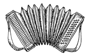
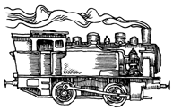
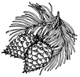
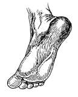
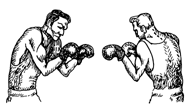
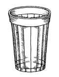

|
ПГ рекомендует:
Вы интересуетесь проблемой наркотизма и любите читать книги.
Das ist fantastisch. Вот вам интересный списочек изданий, вышедших
в последние два года и претендующих на научную объективность.
Сотрудники ПГ в общем и целом - сторонники простой и ясной,как собачьи
глаза, идеи: свободные граждане в свободном обществе должны иметь свободный
доступ к информационным источникам по проблемным вопросам. Уф. Тут в комнату
вошел какой-то мохнатый гуманоид и украл автора.
Петросян С.Р. Культура безумия.
Проблема популярности психоактивных веществ. Москва, 1998. - 168
с. - 200 экз.
"Дорогой читатель! - во первых строках иронично интригует Петросян.
- Устраивайся поудобнее, чтобы отправиться в мир опасных идей вместе с
безумным писателем, который отведал запретных зелий и сошел с ума..."
Книга поделена на две части (предваренные короткими "Предисловием"
и "Введением"). В первой рассматривается история галлюциногенов, анализируется
общественное мнение, выясняется, "Что случилось с обезьянами", а одна из
глав называется "Добро и зло" - кроме шуток. Во второй части на разных
примерах демонстрируются "Измененные состояния сознания", автор делится
"Психоделическим опытом", размышляет, "Что дальше", предлагая некую "Психоделическую
утопию". Три главы посвящены марихуане: истории, медицинским и культурным
аспектам употребления.
"Культура безумия" - местами академично сухое, местами экстатично восторженное
изложение идей Лилли, Грофа, Маккенны и прочих адептов психоделической
революции. Главная идея: галлюциногены (т.е. в первую очередь продукты
конопли, псилоцибин, мескалин, а также ЛСД) - не наркотики, ставить их
в один ряд с героином и другими опиатами - глупость и злонамеренная пропаганда.
Стоит различить наркоманию и наркотизм: Первое есть патологическая
одержимость, второе - реализация заложенной в сознании каждого природной
потребности. Отдельные фрагменты великолепно цитируются: "Наблюдая, как
спиваются талантливые, образованные люди, глядя на соотечественников, которые
начинают свой рабочий день с алкоголя и заканчивают его тем же, я часто
думал: неужели конопля неуместна в этом безумном мире, где люди не считают
зазорным на протяжении многих лет регулярно напиваться до полусознательного
состояния, выкуривая по пачке сигарет в день?"[с. 7].
Петросян обвиняет государство в репрессивной прогибиционистской политике:
война с наркотиками, по его мнению, есть следствие государственного стремления
манипулировать сознаниями и телами подданных, получая при этом немалую
финансовую выгоду. Легальные в большинстве стран алкоголь и табак государство
использует как средство манипуляции. "Неизбежным следствием репрессивной
политики по отношению к психоактивным веществам является закономерное возникновение
мощнейшей подпольной индустрии, обслуживающей производство и распространение
наркотиков,"- делает свой вывод автор [с. 30].
Он резко нападает на материализм и позитивистское мировоззрение, одновременно
предъявляя счет главенствующим монотеистическим религиям. И в первую очередь
- христианству: "Церковь всегда была строжайшим цензором языческой культуры,
исключив даже идею о том, что растения могут быть связаны с духовной практикой"
[с. 65]. Именно возвращение к языческой культуре, некий "новый шаманизм",
возникновение которого Петросян напрямую связывает с психоделическим прорывом
второй половины ХХ века, способны вернуть человеку утерянную чистоту восприятия
и излечить его от многих, в первую очередь психических, болезней. В том
числе от наркомании и алкоголизма. Растительные галлюциногены, по мнению
Петросяна, "с глубокой древности служили инструментами целительства и прорицания,
средствами общения с чудотворной Природой" [с. 65].
Цели у автора ясные, намерения благие. Вот только книга больше напоминает
уфологический науч-поп: пафосные пророчества, мутные источники, неубедительные
обобщения. Может быть, в главном Петросян и прав, но зачем же ссылаться
на совершенно неавторитетную "Энциклопедию Преступлений и Катастроф" (Минск:
Литература, 1996) или опус какого-то Ксендзюка А.Э. под многозначительным
заголовком "Тайна Карлоса Кастанеды" (Одесса: Весть, 1995). У научной работы
должна быть библиография, а не список "источников цитат" в совершенно несолидные
44 пункта. Если же перед нами действительно науч-поп, тогда к чему эти
речи о "храме новой веры", о "новой духовной практике"? Ощущение такое,
что автор не сумел справиться с детским восторгом по поводу особо удачного
ЛСД-трипа...
С сожалением и сочувствием делаю вывод: потенциальных союзников в борьбе
с прогибиционизмом книга Петросяна отпугнет сектантским пафосом, а весьма
и весьма большое количество реальных противников "перемирия с наркотиками"
только укрепит. Жаль. И все же "Культура безумия" - первая ласточка. В
наши сени - с весною.
Марлин Добкин де Риос. Растительные галлюциногены.
Москва: КСП, 1997. - 272 с. - 5000 экз.
Автор, судя по всему, настоящая дочь цветов. Простая арифметика - свои
полевые исследования Добкин де Риос проводила в 1967, 1968, 1969 годах.
Т.е. во времена расцвета психоделической революции, когда, по признанию
одного из апологетов этой революции, тысячи и тысячи ищущих просветления
этнографов, антропологов, поэтов и просто волосатых ублюдков бродили по
Латиноамериканским джунглям. Кое-кто всего лишь испытал "истые галлюцинации",
другие основали церкви и секты, третьи сторчались или попали за решетку.
Добкин де Риос выбрала иной путь: строго научный. Цель ее работы - показать
"любознательным представителям западного общества отдельные системы верований
древних людей, которые отсутствуют в археологических памятниках" [с.
6]. Книга неплохо иллюстрирована, присутствуют ботанически точные изображения
всех психоактивных растений, о которых идет речь.
Понятно, что верования индейцев - основной материал де Риос, хотя она
старается использовать сведения о сибирском шаманизме, об австралийских
и африканских религиях. Но, к примеру, весь пассаж под названием "Коренные
народы Сибири" занимает шесть [!] страниц текста, из которых одна отведена
под графическое изображение Amanita muscaria - т.е. мухомора. Де Риос старательно,
но с истинно американской простотой пересказывает прочитанное, и потому
самой интересной главой становится основанная на личном опыте: "Метисы
перуанской амазонки". Здесь де Риос рассказывает о сохранившейся до наших
дней целительской практикеаяхуаскеро, использующих дикую лозуBanisteriopsis
caapi, илиаяхуаска.
Автор искренне и бескомпромиссно борется с невежеством:"Я приняла 100
микрограммов ЛСД и впоследствии посещала сессии, в процессе которых пила
снадобье, содержащее аяхуаска и чакруну. Я уверена, что исследователь,
работающий с наркотическими средствами, должен испытать субъективные ощущения
под их воздействием, чтобы лучше понять смысл того, о чем ему рассказывают"
[с.
189]. Серьезны намерения де Риос, вызывает уважение ее откровенность.
Примечателен и финальный вывод:"Любой человек, который решился войти в
мир этих [психоделических - ПГ] реальностей, должен быть специальным образом
подготовлен, прежде чем пуститься в путешествие" [с. 231].
Идея монографии ясна - древние сообщества в гораздо большей степени
зависели от различного рода психоактивных, или "психодислептических" веществ.
Религии и верования шаманского типа невозможны без ритуализированного употребления
различного рода "священных растений". Важный момент: де Риос не идеализирует
архаические сообщества, не говорит об их безусловной и позитивной близости
к матушке-природе. И признает, что психоделические растения и грибы могли
быть использованы и при массовых человеческих жертвоприношениях, которыми
так любили украшать свои празднества ацтеки, майя и пр. "Растительные галлюциногены"
- источник экзотической и расширяющей сознание информации, отсутствующей,
как правило, в стандартном учебнике древних религий. К сожалению, были
приложены немалые усилия, чтобы уничтожить всякие упоминания о галлюциногенах,
достаточно вспомнить бешеную политику испанских завоевателей в Новом Свете.
Да к тому же сами носители традиций не стремились записывать свои тайные
знания...
Но в целом книга довольно невнятна. Иногда возникает ощущение, что
автор боится сделать какой-то окончательный вывод и прячет собственные
комплексы за потоком необязательных слов. Совершенно нечитабельны приводимые
таблицы, структура отдельных глав напоминает лабиринт Минотавра. Во многом
это - заслуга переводчика Богайчука И.К., умудрившегося, например, даже
знаменитого мифолога Мирчо Элиаде превратить в женщину по фамилии Элиад
(по всей книге рассыпано: "Элиад сказала... Элиад писала..."). Система
использованных де Риос доказательств не всегда убедительна. А те места
в книге, где она рассуждает об истинном смысле гигантских каменных композиций
в пустыне Наска, слишком явственно напоминают творчество небезызвестного
Эриха фон Дэникена. Уфологический стиль подрывает доверие к любой, даже
самой бесспорной концепции. Хотя растительные галлюциногены все-таки коренятся
в земле, в то время как летающие тарелки Дэникена так и остаются в лучшем
случае на околоземной орбите.
Лев Тимофеев. Наркобизнес. Начальная теория экономической отрасли.
Москва: РГГУ, 1998. - 112 с. - 1000 экз.
Единственная, пожалуй, безупречная научная работа на эту скользкую
тему, обнаруженная в книжных развалах. Тимофееву чужда как прогибиционистская,
так и легализационная пропаганда. Его интересует одно:"Позитивное теоретическое
рассмотрение наркобизнеса как собственно экономического феномена, развивающегося
в специфических условиях юридического запрета" [с. 5]. Для неспециалиста
книга окажется довольно скучной - слишком много схем, цифр и профессиональных
рассуждений. Но для человека заинтересованного, пусть даже и не подготовленного
специально, чтение станет не только весьма интересным, но и полезным. Ибо
многие стереотипы, навязанные массовому сознанию (предпочитаю этот термин
вместо распространенного "общественного мнения"), разрушаются Тимофеевым
убедительно и ловко.
Как, например, основной постулат сторонников "войны с наркотиками":
ужесточите законодательный запрет и связанные с его исполнением репрессии
до предела, и наркобизнес будет побежден. Тимофеев доказывает: спрос на
наркотики в современном обществе не исчезнет никогда, а значит, всегда
найдется предприниматель, не желающий уходить с рынка. "С экономической
точки зрения рынок наркотиков бессмертен" [с. 31], - считает Тимофеев.
Более того: ужесточение запрета оказвается выгодно наркобизнесу,
ибо повышает и без того запредельные прибыли. Наркобизнес, считает автор,
"всегда будет стремиться предельно увеличивать производство... в ответ
на ужесточение запрета" [с. 80]. Тимофеев вскрывает и механизм коррупции
запрета, доказывая, что у исполнителей закона и наркомафиози существует
"объективное единство интересов" [с. 66]: и те, и другие не заинтересованы
в легализации. Для подпольных торговцев это будет означать потерю прибылей,
для честных исполнителей запрета - потерю "денежного и материального довольствия,
прерогатив власти и других привилегий" [с. 66]. Существуют, конечно,
и нечестные исполнители, чей "доход тем выше, чем жестче запрет, - как
раз потому, что с ужесточением запрета и увеличением рисков растет цена
страхового продукта, в производстве которого и принимает участие коррумпированный
чиновник" [с. 61]. Интересно, как наркобизнес влияет на государство,
отмывая свои гигантские денежные массы через строительный или нефтяной
бизнес (наиболее распространенные, как указывает Тимофеев, способы отмывки
наркодолларов). "Поддержка парламентской фракции со стороны строительной
корпорации или нефтяной компании не вызывает особых подозрений, но создает
широкие возможности для влияния на законодательные и правоохранительные
функции государственных институтов" [с. 58], - как бы между прочим
замечает Тимофеев. Возможно, это замечание приоткрывает завесу тайны над
некоторыми внутриполитическими событиями, в том числе объясняя, как, кем
и для чего был принят печальной памяти закон по наркотикам, вступивший
в силу 15 апреля 1998 года.
На страницах 47-49 приводятся две замечательные таблицы. Первая показывает
устройство кокаинового картеля - от главного босса до последнего радиста
или шофера. Вторая представляет все наиболее известные преступные организации:
триады, якудза, Коза Ностра и пр. Впечатляют цифры: в то время, как численность
так называемой "Ла Коза Ностры", т.е. знаменитой по фильмам и книгам итальянской
мафии Нью-Йорка, составляет около 3000 членов, в мафиозных группировках
на территории бывшего Восточного блока занято до 3000000 человек. А вот
еще статистика, приводимая Тимофеевым. В Пакистане - стране-производителе
опиума - килограмм чистого героина стоит 2870 $, а конечная уличная цена
где-нибудь в Лондоне доходит при этом до 290000 $ за килограмм...
Экономический взгляд на ситуацию приводит порой к забавным открытиям.
Так, повышение в начале 90-х цен на экстази и тяжелые наркотики оказалось
"неожиданным косвенным результатом вывода из Москвы армейских строительных
батальонов, укомплектованных в основном уроженцами Средней Азии", которые
"были надежным каналом поставки марихуаны" [с. 31].
Тимофеев, впрочем, и сам разделяет некоторые иллюзии, связанные с воздействием
антинаркотической пропаганды. Он не склонен как-то разводить понятия наркомании
и наркотизма и, в принципе, согласен, что от нерегулярного курения марихуаны
прямой путь к тяжелой героиновой зависимости. Распространенное неразличение
собственно наркотиков - т.е. вызывающих физическую зависимость препаратов
типа героина (или никотина) - и легких галлюциногенов типа каннабиса оказывается
практически единственным недостатком этой в высшей степени впечатляющей
работы.
Пусть специалисты-экономисты судят о том, насколько глубоко вскрыл
Тимофеев законы и механизмы функционирования наркобизнеса. Я доверяю его
выводам, ибо их подтверждает логика жизни: "Вся безнадежность ситуации
с наркотиками показывает, что людям, обществу ничего не остается, как только
научиться жить в мире, набитом наркотиками, в окружении опасностей, из
этого проистекающих... Здесь требуются нетрадиционные подходы, сильная
политическая воля и высокое интеллектуальное мужество" [с. 108]. Так заканчивает
Лев Тимофеев свою замечательную книгу.
Проф. Ю. Лоцман
специально для Голоса ПГ.
|